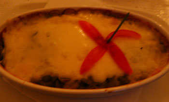
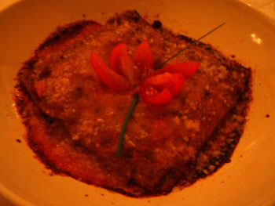

Falai Panetteria, part two
I had what might be my last dinner at Falai Panetteria last night; they’re getting a beer and wine license in three weeks! So sad, but I wish them well. The gorgeous waitress said it would still be reasonable, but I’m not trekking to Clinton Street for cicchetti, no matter how reasonable, if I can’t bring my own wine.
Last night I ordered from the specials. First I had the split peas with onion, pancetta, and melted fontina ($6):

If you can tolerate split peas, and I can, this was delicious. What isn’t delicious with melted fontina on it, though? Next I had orrechiette with pesto, for $12. I wish they had mom’s recipe in there, because it was bland and totally lame. I can’t believe they were charging so much for something so simple.
Sabena had the polenta bianca with wild boar ragu, which was excellent. And Emily had the whole wheat lasagna, which I think was the best dish anyone ordered all night:

If anyone reading this knows other BYOB places in New York (other than Tartine), please leave them in the comments. These ladies and I would love to know about them.
Incidentally, mom and I have hit the big time in Pittsburgh.
Comments
remember your little friends when you are famous…
(tons of byob in brooklyn :P) i’ll keep my eye out. i think tab tos on 5th and B is byob, it’s amazingly cheap cheap cheap japanese food. great portions and really fresh
Steak, I’ll always love you, even when you ignore invitations for spoon pork.
Our boy’s growing up…you’re famous!!!
We are so proud!
p.s. you promised Gio that we would go to this falai place in the spring so you will have to suck it up one more time.
Nook is a cute little restaurant in Hell’s Kitchen at 50th and 9th that’s BYOB.
Anything for Megs and Gio. You girls are so cute. Step one, however, would be getting you below 14th Street…
Thanks for the tip, Jimmy. I’ll put it on the list!
the orchard and e.u.
Thanks, Les. I hate to be happy that EU was denied their liquor license, but I’ll certainly go!
Add a comment